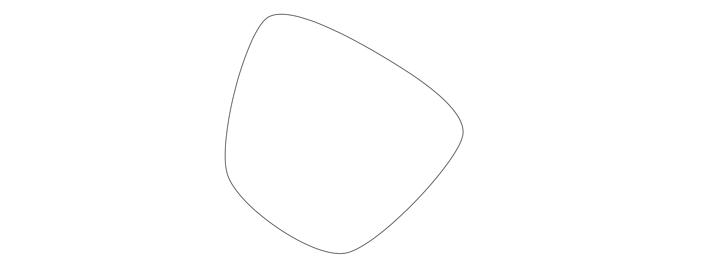
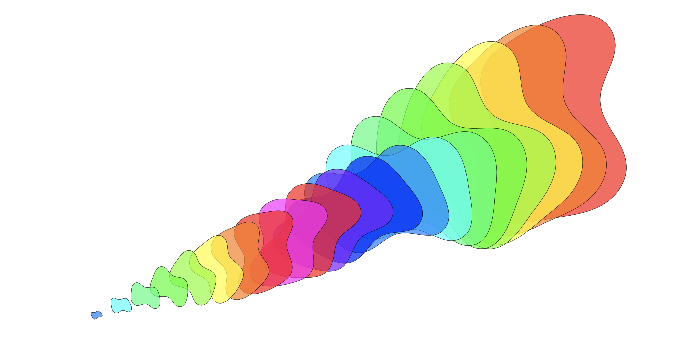

PlotCoordinates
Bases: DrawingObject
A class to manage plots in a tikz environment.
The PlotCoordinates class is used to represent the plot_coordinates functionality in TikZ. It is analagous to the TikZ command
Parameters:
| Name | Type | Description | Default |
|---|---|---|---|
options |
str)
|
String containing drawing options (e.g., "Blue") |
''
|
plot_options |
str)
|
String containing the plot options (e.g., "smooth cycle") |
''
|
points |
list)
|
A list of points to be drawn |
required |
property
Calculates the geometric center (centroid) of a collection of points.
This property computes the arithmetic mean of the x and y coordinates of all points in the collection. The result is a new Point object representing the centroid of these points.
Returns:
| Name | Type | Description |
|---|---|---|
Point |
Point
|
A Point object representing the geometric center of the collection of points. |
Adds a new point to the points list.
This method creates a new Point instance with the specified x and y coordinates,
and appends it to the points attribute of the class.
Parameters:
| Name | Type | Description | Default |
|---|---|---|---|
x |
int / float
|
The x-coordinate of the point. |
required |
y |
int / float
|
The y-coordinate of the point. |
required |
Returns:
| Type | Description |
|---|---|
|
None |
Examples
Introducing examples of PlotCoordinates gives us an opportunity to illustrate the optional parameter action. By default, action is "draw" (analogous to \draw in Tikz) so the code below
import tikzpy
tikz = tikzpy.TikzPicture()
points = [(2, 2), (4, 0), (1, -3), (-2, -1), (-1, 3)]
plot = tikz.plot_coordinates(points) # action="draw" by default
plot.plot_options = "smooth cycle, tension = 0.5"

Alternatively we can set action = "fill" (analogous to \fill in Tikz) as in the code below
import tikzpy
tikz = tikzpy.TikzPicture()
points = [(2, 2), (4, 0), (1, -3), (-2, -1), (-1, 3)]
plot = tikz.plot_coordinates(points, options="Blue", action="fill")
plot.plot_options = "smooth cycle, tension = 0.5"
If we want both, we can set action = "filldraw" (analogous to \filldraw in Tikz)
import tikzpy
tikz = tikzpy.TikzPicture()
points = [(2, 2), (4, 0), (1, -3), (-2, -1), (-1, 3)]
plot = tikz.plot_coordinates(points, options="Blue", action="filldraw")
plot.options = "fill=ProcessBlue!50"
plot.plot_options = "smooth cycle, tension = 0.5"
Finally, we can set action = "path" (analogous to \path in Tikz), but as one would expect this doesn't draw anything.
PlotCoordinates has methods .shift(), .scale, and .rotate, similar to the class Line, and the parameters behave similarly. These methods are more interestingly used on PlotCoordinates than on Line. For example, the code
import tikzpy
tikz = tikzpy.TikzPicture()
points = [(14.4, 3.2), (16.0, 3.6), (16.8, 4.8), (16.0, 6.8), (16.4, 8.8), (13.6, 8.8), (12.4, 7.6), (12.8, 5.6), (12.4, 3.6)]
for i in range(0, 20):
options = f"fill = {rainbow_colors(i)}, opacity = 0.7"
# Requires \usetikzlibrary{hobby} here
plot_options = "smooth, tension=.5, closed hobby"
plot = tikz.plot_coordinates(points, options, plot_options)
plot.scale((20 - i) / 20) # Shrink it
plot.rotate(15 * i) # Rotate it
